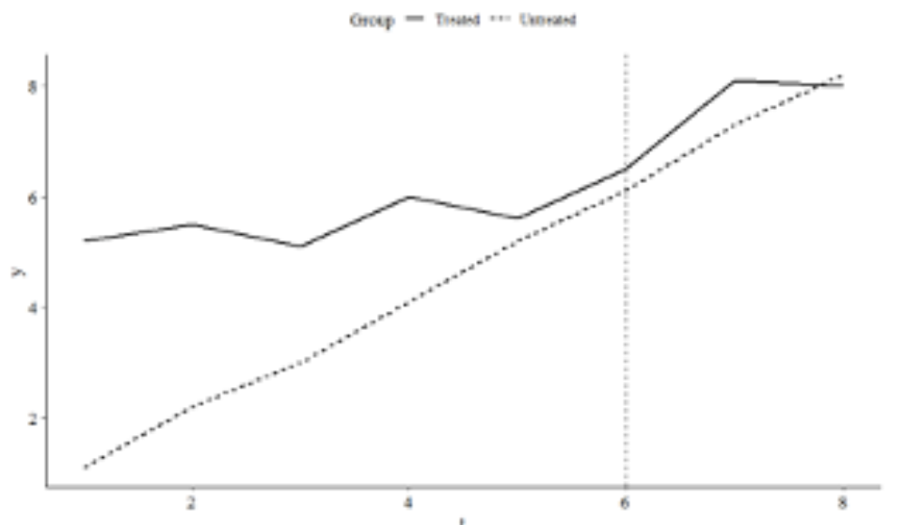
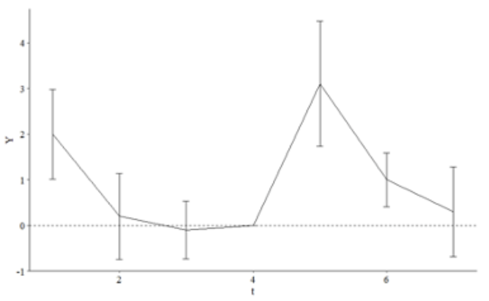

HW11
HW11
11.1
In the Event Studies chapter we estimated the effect of something that occurs at a specific time by just comparing before-event to after-event, without really using a control group. What assumption is made by no-control-group event studies that we don’t have to make with difference-in-differences?
In an event study, we have to assume the over time trend in the data is the same before and after the event. In DiD, we just need parallel trends to hold, but we don’t need to assume the trend will be the same before and after the event.
11.2
Which of the following potential back doors is controlled for by comparing the treated group to a control group?
The treated group may be following a trend, unique to the group, that would make the outcome change from before-treatment to after-treatment anyway
There may be events affecting everyone that would change the outcome from before-treatment to after-treatment anyway (this one)
There may be differences in typical outcome levels between the treated group and the untreated group
The decision to treat the treated group, rather than some other group, may be based on factors that are related to the outcome
11.3
Consider a treatment and control group. Looking only at the pre-treatment period, they have exactly the same outcomes (zero gap between them in each period).
Despite having exactly the same outcomes pre-treatment, it happens to be the case that parallel trends is violated for these two groups. How is this possible? Explain what it means for parallel trends to be violated in this case, or give an example of how it could be violated?
Parallel trends requires that the two groups would have similar trends both pre and post-treatment. Perhaps the pre-treatment alignment would hold, but the post-treatment alignment would not.
If we estimate the causal effect in this case using difference-in-differences, even though parallel trends is violated, how much would our effect be off by? (note you won’t be able to give a specific number)
We would end up underestimating the true causal effect, because the apparent pre-treatment difference in groups is relatively overestimated.
11.4
Consider the below graph showing the average outcome for treated and control groups in the lead up to treatment (indicated by the dashed line), and also after treatment

Based on the prior trend, does it seem likely that parallel trends holds in this instance?
No, the two groups trends don’t seem very similar, especially in the pre-treatment observations.
If we estimate difference-in-differences anyway, are we likely to overestimate the actual causal effect, underestimate it, or get it right on average?
We’d underestimate the actual causal effect, because the pre-treatment is overestimated.
11.5
In mid-2020, during the COVID-19 pandemic, different countries pursued different courses of action. Some locked down fully, imposing harsh penalties to most people for leaving the house outside certain proscribed times. Some were looser and only suggested staying at home, and some had hardly any restrictions at all. You notice that COVID rates tend to spike dramatically in different countries at seemingly-random times, and want to know if certain restrictions helped.
From March through May 2020, US and Canada COVID case rates followed similar trends (US rates were higher, but the trends were similar). You want to look at the effect of COVID restrictions enacted in Canada in late May 2020 on case rates. Is DID, with the US as a control group, a good way to estimate this effect? If not, what concerns would you have about this research design?
Even the fact that the US rates were higher is enough to be concerned that the parallel trends assumption cannot hold here. Especially because infectious disease relies, vaguely speaking, on exponential growth, even a small head start would mean their trends after treatment were going to diverge significantly independent of the policy “treatment” effects.
11.6
Consider the below table of mean outcomes, and calculate the difference-in-difference effect of treatment. Write out the equation you used to calculate it (i.e. show how the four numbers in the table are combined to get the estimate)
| Before | After | |
| Treated | 5 | 9 |
| Untreated | 6 | 7.5 |
Pre-treatment: 5-6 = 1-
Post-treatment: 9-7.5 = 1.5
DiD: 1.5 - (-1) = 2.5
11.7
You are planning to estimate whether voter-protection laws increase voter turnout. You note that, in 2015, a lot of new voter-protection laws were enacted in some provinces but not in others. Conveniently, no new laws were enacted in 2012, 2014, or 2016, so you decide to use 2012 and 2014 as your “before” periods and 2016 as “after”.
Which of the following best describes what you’d want to regress state-and-year level “voter turnout” measures on?
An indicator for whether the state is treated, and an indicator for whether the year is 2016.
A set of fixed effects for state, and a set of fixed effects for year.
An indicator for whether the state is treated, a set of fixed effects for year, and an indicator for whether the state is currently treated. (this one)
A set of fixed effects for state, and for year, and an interaction between “is 2016” and “is a treated state”.
This design should not be estimated using a regression.
Unless you chose the final option in the previous question, specify which coefficient in that regression would give you the DID estimate.
The one of whether the state is currently treated
11.8
In your own words, describe what is the “two-way fixed effects difference-in-difference estimator.” What does this model assume about the effect of some treatment over time?
This is the coefficients learned by a regression model with fixed effects for treatment condition and time period, clustered for treatment condition.
11.9
Consider the below graph with estimates from a dynamic difference-in-differences model for a treatment that occurs between periods 4 and 5, with 95% confidence intervals shown.

What about this graph might make us concerned about our identification assumptions?
Since the line represents difference between the treated and non-treated, it’s not a good sign that they are different at the start.
Ignoring any concerns we have, what would we say is the effect of treatment on Y in this case? (note the height of the line in period 5 is about 3, in period 6 is about 1, and in period 7 is about .5).
Seems like there is a positive treatment effect which gets weaker over time.